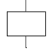
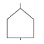
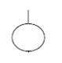
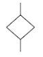
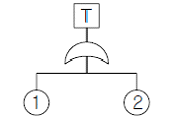
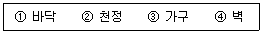
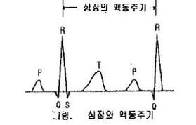
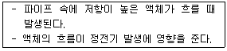
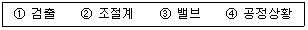
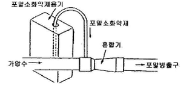

산업안전기사 (2007-09-02 기출문제)
1과목: 안전관리론
1. 버드(Bird)의 재해발생에 관한 이론 중 기본원인은 몇 단계에 해당되는가?
- 제1단계
- 제2단계
- 제3단계
- 제4단계
(정답률: 71%)

2. 다음은 부주의의 발생 현상이다. 혼미한 정신상태에서 심신의 피로나 단조로운 반복작업시에 일어나는 현상은?
- 의식의 과잉
- 의식의 단절
- 의식의 우회
- 의식 수준의 저하
(정답률: 72%)
3. 다음 중 헤드십(headship)의 특성으로 볼 수 없는 것은?
- 권한 근거는 공식적이다.
- 상사와 부하와의 관계는 지배적 관계이다.
- 부하와의 사회적 간격은 좁다.
- 지휘 형태는 권위주의적이다.
(정답률: 88%)
4. 다음 중 리더십의 유형 분류로 볼 수 없는 것은?
- 권위형
- 민주형
- 자유방임형
- 갈등해소형
(정답률: 72%)
5. 매슬로우(Maslow)의 인간의 욕구단계 중 5번째 단계에 속하는 것은?
- 존경의 욕구
- 사회적 욕구
- 안전 욕구
- 자아실현의 욕구
(정답률: 85%)
6. 사고의 직접 원인 중 인적요인에 해당하진 않은 것은?
- 불안전한 속도 조작
- 안전장치의 기능 제거
- 운전 중 기계장치의 고장
- 불안전한 인양 및 운반
(정답률: 84%)
7. 다음 중 보호구가 갖추어야 할 구비 요건과 거리가 먼 것은?
- 착용이 간편할 것
- 작업에 방해가 되지 않을 것
- 금속재료는 내식성이 아닐 것
- 유해, 위험 요소에 대한 방호가 완전할 것
(정답률: 88%)
8. 안전ㆍ보건표지 중 안내표지의 사용 사례로 옳은 것은?
- 특정행위의 지시
- 비상구의 표시
- 유해 행위의 금지
- 기계 방호물의 표시
(정답률: 80%)
9. 베어링을 생산하는 사업장에 300명의 근로자가 근무하고 있다. 1년에 21건의 재해가 발생하였다면 이 사업장에서 근로자 1명이 평생 작업시 약 몇 건의 재해를 당할 수 있겠는가? (단, 1일 8시간, 1년에 300일 근무, 평생근로시간은 10만 시간이다.)
- 1건
- 3건
- 5건
- 6건
(정답률: 68%)
10. 다음 중 Project Method 의 진행방법을 올바르게 나열한 것은?
- 목표결정 → 계획수립 → 활동 → 평가
- 계획수립 → 목표결정 → 활동 → 평가
- 활동 → 계획수립 → 목표결정 → 평가
- 평가 → 계획수립 → 목표결정 → 활동
(정답률: 76%)
11. 바람직한 안전교육을 진행시키기 위한 4단계 가운데 피교육자로 하여금 작업습관의 확립과 토론을 통한 공감을 가지도록 하는 단계는?
- 도입
- 제시
- 적용
- 확인
(정답률: 60%)
12. A 공장의 근로자가 440명, 1일 근로시간이 7시간 30분, 년간 총근로시일수는 300일, 평균출근율 95%, 총잔업 시간이 10000시간, 지각 및 조퇴시간 500시간일 때, 이 기간 중 발생한 재해는 휴업재해 4건, 불휴재해 6건이라고 한다. 이 공장의 도수율은 얼마인가?
- 0.11
- 4.26
- 6.32
- 10.53
(정답률: 42%)
13. 적성 배치에 있어서 고려되어야 할 기본 사항에 해당되지 않는 것은?
- 적성 검사를 실시하여 개인의 능력을 파악한다.
- 직무 평가를 통하여 자격수준을 정한다.
- 주관적인 감정요소를 따른다.
- 인사관리의 기준 원칙을 준수한다.
(정답률: 85%)
14. 다음 중 재해조사의 목적에 해당되지 않는 것은?
- 재해발생 원인 및 결함 규명
- 재해관련 책임자 문책
- 재해예방 자료수집
- 동종 및 유사재해 재발방지
(정답률: 89%)
15. 다음 중 안전관리의 계획부터 실시ㆍ평가까지 모든 것이 생산 라인을 통하여 행하는 특징을 갖는 조직은?
- 참모식 조직
- 직계식 조직
- 직계ㆍ참모식 조직
- 스태프 조직
(정답률: 81%)
16. 다음의 일상점검 중 작업 전에 수행되는 내용에 해당하지 않는 것은?
- 주변의 정리정돈
- 주변의 청소 상태
- 생산품질의 이상 유무
- 설비의 방호장치 점검
(정답률: 87%)
17. 경보기가 울려도 전철이 오기까지 아직 시간이 있다고 판단하여 건널목을 건너다가 사고를 당했다면 이 재해자의 행동성향으로 옳은 것은?
- 착시
- 무의식행동
- 억측판단
- 지름길반응
(정답률: 84%)
18. 허즈버그(Herzberg)의 위생-동기이론에서 동기요인에 해당 하는 것은?
- 감독
- 안전
- 책임감
- 작업조건
(정답률: 75%)
19. 안전교육의 개념에서 학습경험선정의 원리와 가장 거리가 먼 것은?
- 동기유발의 원리
- 계속성의 원리
- 가능성의 원리
- 다목적 달성의 원리
(정답률: 57%)
20. 다음 중 몇 사람의 전문가에 의해 견해를 발표하고 참가자로 하여금 의견이나 질문을 하게 하는 토의방식은?
- 포럼(Forum)
- 자유토의법(Free Discussion Method)
- 심포지엄(Symposium)
- 버즈세션(Buzz session)
(정답률: 82%)
2과목: 인간공학 및 시스템안전공학
21. 안전ㆍ보건표지에서 경고표지는 삼각형, 안내표지는 사각형, 지시표지는 원형 등으로 부호가 고안되어 있다. 이처럼 부호가 이미 고안되어 이를 사용자가 배워야 하는 부호를 무엇이라 하는가?
- 묘사적 부호
- 추상적 부호
- 임의적 부호
- 사실적 부호
(정답률: 72%)
22. 다음 중 정보의 전달에 있어서 청각장치보다 시각장치를 사용해야 하는 경우로 옳은 것은?
- Message 가 간단할 때
- Message 가 즉각적인 행동을 요구하지 않을 때
- Message 가 후에 재참조 되지 않을 때
- Message 가 시간적인 사상을 다룰 때
(정답률: 71%)
23. 다음 중 인간의 손이나 발을 이동시켜 조작장치를 조작하는데 걸리는 시간을 표적까지의 거리와 표적 크기의 함수로 나타내는 모형은?
- 힉(Hick)의 법칙
- 피츠(Fitts)의 법칙
- 웨버(Weber)의 법칙
- 신호탐지이론(SDT)
(정답률: 52%)
24. 다음 중 표시장치에서 숫자를 설계할 때 표준으로 권장되는 폭 대 높이의 비율은 약 얼마인가?
- 1 : 2
- 2 : 3
- 3 : 5
- 4 : 7
(정답률: 48%)
25. 다음 중 분석하고자 하는 작업을 기본행위로 분할하여 각 행위의 성공 또는 실패확률을 결합함으로써 분석 작업의 성공 확률을 추정하는 정량적인 인간신뢰도 분석 방법은?
- Decision tree
- CA
- THERP
- MORT
(정답률: 57%)
26. 일정한 고장율을 가진 어떤 기계의 고장율이 시간당 0.004일 때 10시간 이내에 고장을 일으킬 확률은?
- 1+e0.04
- 1-e-0.004
- 1-e0.04
- 1-e-0.04
(정답률: 49%)
27. FTA에서 사용되는 사상기호 중 결함사상을 나타낸 것은?




(정답률: 58%)
28. 다음 FT도에서 정상사상의 발생확률은 얼마인가? (단, ①과 ②의 발생확률은 각각 0.1, 0.2이다.)

- 0.02
- 0.28
- 0.30
- 0.72
(정답률: 67%)
29. 욕조곡선에서의 고장형태 중 일정형의 고장은 어느 고장 기간에 나타나는가?
- 초기 고장기간
- 우발 고장기간
- 마모 고장기간
- 피로 고장기간
(정답률: 68%)
30. 다음 중 인간이 기계보다 우수한 기능으로 거리가 가장 먼 것은?
- 수신 상태가 나쁜 음극선관에 나타나는 영상과 같이 배경잡음이 심한 경우에도 신호를 인지할 수 있다.
- 항공 사진의 피사체나 말소리처럼 상황에 따라 변화하는 복잡한 자극의 형태를 식별할 수 있다.
- 암호화된 정보를 신속하게 대량으로 보관할 수 있다.
- 관찰을 통해서 일반화하여 귀납적으로 추리한다.
(정답률: 75%)
31. 화학설비에 대한 안전성 평가방법 중 공장의 입지조건이나 공장 내 배치에 관한 사항은 어느 단계에서 하는가?
- 제1단계 : 관계자료의 작성 준비
- 제2단계 : 정성적 평가
- 제3단계 : 정량적 평가
- 제4단계 : 안전대책
(정답률: 71%)
32. 종이의 반사율이 70%이고, 인쇄된 글자의 반사율이 10%이라면 대비(Luminance Contrast)는 약 얼마인가?
- 85.7%
- 89.5%
- 95.3%
- 99.1%
(정답률: 42%)
33. 다음과 같은 실내 표면에서 일반적으로 반사율의 크기를 올바르게 나열한 것은?

- ① < ③ < ④ < ②
- ① < ④ < ③ < ②
- ④ < ① < ② < ③
- ④ < ② < ① < ③
(정답률: 73%)
34. 다음 중 인간의 감각 반응속도가 빠른 것부터 순서대로 나열한 것은?
- 청각 > 촉각 > 시각 > 통각
- 청각 > 시각 > 통각 > 촉각
- 촉각 > 시각 > 통각 > 청각
- 촉각 > 시각 > 청각 > 통각
(정답률: 59%)
35. 자동차는 타이어가 4개인 하나의 시스템으로 볼 수 있다. 타이어 1개가 파열될 확률이 0.01 이라면 이 자동차의 신뢰도는 약 얼마인가?
- 0.92
- 0.94
- 0.96
- 0.99
(정답률: 63%)
36. 다음 중 “Q10 효과”에 직접적인 영향을 미치는 인자는?
- 고온 스트레스
- 한냉한 작업장
- 분진의 다량발생
- 중량물의 취급
(정답률: 48%)
37. 프레스 작업 중에 금형 내에 손이 오랫동안 남아 있어 발생한 재해의 경우 다음의 휴먼 에러 중 어느 것에 해당 하는가?
- 시간 오류(timing error)
- 작위 오류(commission error)
- 순서 오류(sequential error)
- 생략 오류(omission error)
(정답률: 69%)
38. 인체 계측 중 운전 또는 워드 작업과 같이 인체의 각 부분이 서로 조화를 이루며 움직이는 자세에서의 인체치수를 측정하는 것을 무엇이라 하는가?
- 구조적 치수
- 정적 치수
- 외곽 치수
- 기능적 치수
(정답률: 65%)
39. 반경이 15cm 인 조종구(ball control)를 50° 움직일 때 커서(cursor)는 2cm 이동한다. 이러한 선형표시장치의 회전형 제어장치의 C/R비는 약 얼마인가?
- 5.14
- 6.54
- 7.64
- 9.65
(정답률: 51%)
40. 다음 중 누적외상증의 원인으로서 가장 거리가 먼 것은?
- 무리한 힘
- 동작의 반복성
- 불편한 자세
- 습도
(정답률: 78%)
3과목: 기계위험방지기술
41. 산업안전기준에 관한 규칙에서 프레스 금형 조정작업시 안전블록을 사용하는 경우에 해당 되지 않는 것은?
- 금형의 부착
- 금형의 조정
- 금형의 해체
- 금형의 수리
(정답률: 42%)
42. 프레스기계의 위험을 방지하기 위한 본질 안전화가 아닌 것은?
- 금형에 안전울 설치
- 안전블록 사용
- 안전금형의 사용
- 전용프레스 사용
(정답률: 47%)
43. 보일러의 과열 원인이 아닌 것은?
- 수관과 본체의 청소불량
- 급수처리를 하지 않은 물을 사용할 때
- 관수 부족시 보일러의 가동
- 수면계의 고장으로 드럼 내의 물의 감소
(정답률: 64%)
44. 보일러에 관한 설명으로 옳지 않은 것은?
- 수면계의 고장은 과열의 원인이 된다.
- 부적당한 급수처리는 부식의 원인이 된다.
- 안전밸브의 작동불량은 압력상승의 원인이 된다.
- 방호장치의 작동불량은 최고사용압력 이하에서 파열의 원인이 된다.
(정답률: 68%)
45. 아크(arc)용접 작업시, 특히 감전의 위험 발생의 높은 것은?
- 전류 세기가 클 때
- 용접 부위가 클 때
- 용접 열량이 클 때
- 어스 접지 불량시
(정답률: 61%)
46. 하중이 정격을 초과하였을 때 자동적으로 상승이 정지되는 장치는?
- 비상정지장치
- 브레이크장치
- 과부하 방지장치
- 와이어로프 훅 장치
(정답률: 75%)
47. 압력 용기의 압력 방출장치 봉인에 사용되는 재료는?
- 동
- 주석
- 납
- 알루미늄
(정답률: 74%)
48. 선반에서 돌출하여 회전하고 있는 가공물에 설치하여야할 방호조치는?
- 칩브레커
- 울, 덮개
- 방진장치
- 클러치
(정답률: 68%)
49. 보일러의 폭발사고 예방을 위한 장치가 아닌 것은?
- 압력방출장치
- 압력제한스위치
- 언로드밸브
- 고저수위조절장치
(정답률: 72%)
50. 인장강도가 44kgf/mm2이고, 호칭지름이 20mm인 볼트의 안전하중은 약 몇 kgf인가? (단, 안전계수는 5로 한다.)
- 1381
- 2763
- 11⑤2
- 7040
(정답률: 51%)
51. 동력 차단장치를 근로자가 작업위치를 이탈하지 아니하고 조작할 수 있는 위치에 설치하여야 하는 가공작업이 아닌 것은?
- 절단
- 충격파쇄
- 인발
- 굽힘
(정답률: 44%)
52. 양중기에 사용될 수 있는 와이어로프는?
- 이음매가 있는 것
- 꼬인 것
- 지름의 감소가 공칭지름의 7%를 초과하는 것
- 와이어로프의 한 꼬임에서 끊어진 소선의 수가 10%미만인 것
(정답률: 61%)
53. 공작기계 작업에서 안전수칙으로 틀린 것은?
- 기계 회전 중에는 치수 측정을 하지 않는다.
- 기계 회전 중에는 걸레 등으로 청소하지 않는다.
- 기계 회전 중에는 다듬면 검사를 하지 않는다.
- 기계 회전 중이라도 구멍깍기 중에는 구멍속의 칩은 제거하여야 한다.
(정답률: 79%)
54. 회전중인 연삭숫돌이 근로자에게 위험을 미칠 우려가 있을시 해당 부위에 설치하여야 할 덮개의 최소단위 지름은?
- 지름이 5cm 이상인 것
- 지름이 10cm 이상인 것
- 지름이 15cm 이상인 것
- 지름이 20cm 이상인 것
(정답률: 54%)
55. 재료의 항복점, 인장강도, 신장 등을 알 수 있는 시험방법은?
- 인장시험
- 충격시험
- 경도시험
- 마모시험
(정답률: 72%)
56. 훅 걸이용 와이어로프 등이 훅으로부터 벗겨지는 것을 방지하는 방호장치는?
- 조속기
- 훅 해지장치
- 훅 걸이장치
- 권과 방지장치
(정답률: 60%)
57. 현장에서 기계기구의 안전성을 유지하기 위하여 매일 작업 전, 작업 중, 작업 후에 실시하는 안전점검은?
- 일일 점검
- 월정기 점검
- 년정기 점검
- 임시 점검
(정답률: 78%)
58. 회전수가 300rpm, 연삭숫돌의 지름이 200mm 일 때 원주속도는 몇 m/min인가?
- 78.84m/min
- 188.4m/min
- 294.2m/min
- 394.2m/min
(정답률: 69%)
59. 전동공구 작업시 주의사항으로 틀린 것은?
- 전기드릴 작업시 구멍이 잘 뚫릴 수 있도록 강한 힘을 가해 작업한다.
- 진동공구 사용시 진동방지장갑, 청력보호구, 마스크를 착용하고 작업한다.
- 전기그라인더 사용시 최고회전수 상태에서 작업을 한다.
- 납땜 인두 작업시 배기시설을 확인한 후 작업한다.
(정답률: 52%)
60. 사전에 회전축의 재질, 형상 등에 상응하는 회전시험을 할때, 비파괴검사를 실시해야 하는 고속회전체는 어느 것인가?
- 회전축의 중량이 1톤을 초과하고, 원주속도가 100m/s 이상인 것
- 회전축의 중량이 1톤을 초과하고, 원주속도가 120m/s 이상인 것
- 회전축의 중량이 0.5톤을 초과하고, 원주속도가 100m/s 이상인 것
- 회전축의 중량이 0.5톤을 초과하고, 원주속도가 120m/s 이상인 것
(정답률: 68%)
4과목: 전기위험방지기술
61. 인체의 대전에 기인하여 발생하는 전격의 발생한계 전위는 몇 [kV] 정도 인가?
- 0.5
- 3.0
- 5.5
- 8.0
(정답률: 47%)
62. 어느 변전소에서 고장전류가 유입되었을 때 도전성 구조물과 그 부근 지표상의 점과의 사이(약1m)의 허용접촉전압 은? (단 심실세동전류 Ik=(0.116/√t[A], 인체의 저항: 1000[Ω], 지표면의 저항율 : 150[Ω・m], 통전시간을 1[초]로 한다.)
- 142.1
- 150.8
- 168.2
- 220.4
(정답률: 33%)
63. 심장맥동주기(그림)의 어느 위상에서 전격이 인가되었을때 심실세동을 일으킬 확률이 가장 높은 부분은?

- R
- T
- P
- Q와 S
(정답률: 53%)
64. 반도체 취급시에 정전기로 인한 재해 방지 대책으로써 거리가 먼 것은?
- 송풍형 제전기 설치
- 부도체의 접지 실시
- 작업자의 대전방지 작업복 착용
- 작업대에 정전기 매트 사용
(정답률: 52%)
65. 인체의 전기저항을 500Ω이라 하면, 심실세동을 일으키는 정현파 교류의 에너지 측면의 안전한계는 몇 [J] 인가?
- 6.5 ~ 17.0
- 1.5 ~ 2.5
- 20 ~ 30
- 31.5 ~ 38.5
(정답률: 62%)
66. 다음 중 1종 장소에 적합하지 않은 방폭전기기기는?
- 압력방폭구조
- 유압방폭구조
- 본질안전방폭구조
- 수입증방폭구조
(정답률: 62%)
67. 다음 중 정전작업이 끝난 후 필요한 조치 사항으로 가장 옳은 것은?
- 감전위험 요인 제거
- 개로 개폐기의 시건 혹은 표시
- 단락접지
- 감독자 선임
(정답률: 37%)
68. 다음 설명과 가장 관계가 깊은 것은?

- 유동대전
- 박리대전
- 충돌대전
- 분출대전
(정답률: 72%)
69. 피뢰침의 제한 전압이 800kV, 충격절연강도가 1,260kV라 할 때, 보호여유도는 몇 %인가?
- 33.33
- 47.33
- 57.5
- 63.5
(정답률: 50%)
70. 인체가 감전되었을 때 그 위험성을 결정짓는 주요 인자와 거리가 먼 것은?
- 통전 시간
- 통전전류의 크기
- 감전전류가 흐르는 인체부위
- 교류 전원의 종류
(정답률: 61%)
71. 전력량 1[kWh]를 열량으로 환산하면 몇 [kcal] 인가?
- 754
- 804
- 864
- 954
(정답률: 46%)
72. 300A 의 전류가 흐르는 저압 가공전선로의 한 선에서 허용 가능한 누설전류는 몇 [mA] 를 넘지 않아야 하는가?
- 100
- 150
- 1000
- 1500
(정답률: 63%)
73. 전폐형의 구조로 되어 있으며, 외부의 폭발성 가스가 내부로 침입해서 폭발하였을 때 고열가스나 화염이 협격을 통하여 서서히 방출시킴으로써 냉각되는 방폭구조는?
- 내압 방폭구조
- 유압 방폭구조
- 압력 방폭구조
- 안전증 방폭구조
(정답률: 51%)
74. 제전기의 제전효과에 영향을 미치는 요인으로 볼 수 없는 것은?
- 제전기의 이온 생성능력
- 제전기의 설치 위치 및 설치 각도
- 대전 물체의 대전 전위 및 대전분포
- 전원의 극성 및 전선의 길이
(정답률: 59%)
75. 다음 중 계통접지의 목적으로 가장 옳은 것은?
- 누전되고 있는 기기에 접촉되었을 때의 감전방지를 위해
- 고압전로와 저압전로가 혼촉되었을 때의 감전이나 화재방지를 위해
- 병원에 있어서 의료기기 계통의 누전을 10㎂ 정도도 허용하지 않기 위해
- 의사의 몸에 축적된 정전기에 의해 환자가 쇼크사 하지 않도록 하기 위해
(정답률: 62%)
76. 비파괴검사 방법 중 자성체 분말을 뿌려 금속(자성체)파이프 등의 결함을 발견하는 방법이 있다. 이 방법은 어떤 매질상수에 비례하는 성질을 이용한 것인가?
- 도전율
- 투자율
- 유전율
- 저항율
(정답률: 42%)
77. 지락이 생긴 경우 접촉상태에 따라 접촉전압을 제한할 필요가 있다. 인체의 접촉상태에 따른 허용접촉전압을 나타낸 것으로 다음 중 옳지 않은 것은?
- 제1종 2.5V 이하
- 제2종 25V 이하
- 제3종 42V 이하
- 제4종 제한없음
(정답률: 61%)
78. 충격전압시험시의 표준충격파형을 1.5×50㎲ 로 나타내는 경우 1.2 와 50 이 뜻하는 것은?
- 파두장 - 파미장
- 최초섬락시간 - 최종섬락시간
- 라이징타임 - 스테이블타임
- 라이징타임 - 충격전압인가시간
(정답률: 62%)
79. 다음 중 지락 보호의 목적과 직접적으로 연관 있는 것은?
- 초기 설비 비용 절감
- 누전 화재 방지
- 전기 선로의 단선 방지
- 설비의 열화 방지
(정답률: 40%)
80. “화염일주 한계”란 무엇을 말하는가?
- 최대안전틈새
- 화염의 유지시간
- 폭발한계
- 불꽃이 화염으로 성장하기까지의 시간
(정답률: 57%)
5과목: 화학설비위험방지기술
81. 다음 각 물질에 대한 저장법으로 잘못된 것은?
- 나트륨 - 석유 속에 저장
- 니트로글리세린 - 유기용제 속에 저장
- 적린 - 냉암소에 격리 저장
- 질산은 용액 - 햇빛을 차단하여 저장
(정답률: 44%)
82. 산업안전기준에 관한 규칙에서 정한 위험물질의 종류 중 폭발성물질 및 유기과산화물이 아닌 것은?
- 셀룰로이드 류
- 질산에스테르류
- 아조 화합물
- 유기과산화물
(정답률: 47%)
83. 기상폭발 피해예측의 주요 문제점 중 압력 상승에 기인하는 피해가 예측되는 경우에 검토를 요하는 사항으로 거리가 가장 먼 것은?
- 가연성 혼합기의 형성 상황
- 압력 상승시의 취약부 파괴
- 물질의 이동, 확산 유해물질의 발생
- 개구부가 있는 공간 내의 화염전파와 압력상승
(정답률: 36%)
84. 다음 중 폭발하한계에 대한 설명으로 틀린 것은?
- 혼합가스의 단위 체적당의 발열량이 일정한 한계치에 도달하는데 필요한 가연성 가스의 농도이다.
- 폭발하한계에 있어서 산소는 연소하는데 과잉으로 존재한다.
- 폭발하한계에서 화염의 온도는 최저치로 된다.
- 일반적으로 온도가 상승함에 따라서 폭발하한계는 높아진다.
(정답률: 49%)
85. 다음 중 회분식 반응기의 특징으로 볼 수 없는 것은?
- 회분식 반응기는 보통 교반조가 이용된다.
- 반응열을 이용하거나 반응물질을 조절하는 목적으로 이용되며, 소품종 대량생산에 적합하다.
- 온도조절을 통하여 복합반응의 선택성을 유지하도록 하는 경우에 이용된다.
- 중합반응과 같이 반응의 진행과 더불어 점도가 비정상적으로 증가하는 경우에 사용된다.
(정답률: 42%)
86. 프로판(C3H8)의 연소하한계가 2.2vol% 일 때 연소를 위한 최소산소농도(MOC)는 몇 vol% 인가?
- 5.0
- 7.0
- 9.9
- 11.0
(정답률: 42%)
87. 공기 중에서 아세틸렌의 폭발하한계는 2.2vol% 이다. 이 경우 표준상태에서 아세틸렌과 공기의 혼합기체 1m3 에 함유되어 있는 아세틸렌의 양은 약 몇 g 인가? (단, 아세틸렌의 분자량은 26 이다.)
- 19.02
- 25.54
- 29.02
- 35.54
(정답률: 50%)
88. 고압가스 용기 파열사고의 주요 원인 중 하나는 용기의 내압력(耐壓力) 부족이다. 다음 중 내압력 부족의 원인으로 틀린 것은?
- 용기 내벽의 부식
- 강재의 피로
- 과잉 충전
- 용접불량
(정답률: 68%)
89. 소화방식의 종류 중 주된 작용이 질식소화에 해당되는 것은?
- 스프링클러
- 에어-폼
- 강화액
- 호스방수
(정답률: 57%)
90. 다음 중 분진폭발순서를 올바르게 배열한 것은?
- 퇴적분진 → 비산 → 분산 → 발화원 → 전면폭발 → 2차폭발
- 퇴적분진 → 분산 → 발화원 → 비산 → 전면폭발 → 2차폭발
- 비산 → 퇴적분진 → 분산 → 발화원 → 2차폭발 → 전면폭발
- 비산 → 분산 → 퇴적분진 → 발화원 → 2차폭발 → 전면폭발
(정답률: 66%)
91. 공기 중에서 수소의 폭발하한계가 4.0vol%, 상한계가 75.0vol% 라면 수소의 위험도는 얼마인가?
- 16.75
- 17.75
- 18.75
- 19.75
(정답률: 62%)
92. 다음 중 산업안전보건법에서 지정한 화학설비에 해당되지 않는 것은? (단, 부속설비는 제외한다.)
- 반응기ㆍ혼합조 등의 화학물질 반응 또는 혼합장치
- 가스누출감지 및 경보관련 설비
- 응축기ㆍ냉각기ㆍ가열기 등의 열교환기류
- 펌프류ㆍ압축기 등의 화학물질 이송 또는 압축설비
(정답률: 57%)
93. 다음 [보기]에서 일반적인 자동제어 시스템의 작동순서를 바르게 나열한 것은?

- ① → ② → ④ → ③
- ④ → ① → ② → ③
- ② → ④ → ① → ③
- ③ → ② → ④ → ①
(정답률: 67%)
94. [그림]은 포말소화약제혼합장치 중 무슨 장치에 해당하는가?

- 관로 혼합 장치
- 차압 혼합 장치
- 펌프 혼합 장치
- 압입 혼합 장치
(정답률: 54%)
95. 건조설비의 구조는 구조부분, 가열장치, 부속설비로 구성 된다. 다음 중 “구조부분”에 속하는 것은?
- 보온판
- 열원장치
- 소화장치
- 전기설비
(정답률: 50%)
96. 다음 중 관의 지름을 변경하는데 사용되는 관의 부속품으로 가장 적절한 것은?
- 엘보우(Elbow)
- 커플링(Coupling)
- 유니온(Union)
- 리듀서(Reducer)
(정답률: 68%)
97. 다음 중 자연발화가 쉽게 일어나는 조건으로 틀린 것은?
- 주위온도가 높을수록
- 발열량이 크고 열 축적이 클수록
- 적당량의 수분이 존재할 때
- 표면적이 작을수록
(정답률: 64%)
98. 산업안전기준에 관한 규칙상 건조설비를 사용하여 작업을 하는 경우 폭발 또는 화재를 예방하기 위하여 준수하여야 하는 사항으로 적절하지 않은 것은?
- 위험물 건조설비를 사용하는 때에는 미리 내부를 청소하거나 환기할 것
- 위험물 건조설비를 사용하는 때에는 건조로 인하여 발생하는 가스ㆍ증기 또는 분진에 의하여 폭발ㆍ화재의 위험이 있는 물질을 안전한 장소로 배출시킬 것
- 위험물 건조설비를 사용하여 가열건조하는 건조물은 쉽게 이탈되도록 할 것
- 고온으로 가열건조한 인화성 액체는 발화의 위험이 없는 온도로 냉각한 후에 격납시킬 것
(정답률: 73%)
99. 다음 중 산업안전기준에 관한 규칙에서 정한 독성물질에 대한 정의로 틀린 것은?
- LD50(경구, 쥐)이 300mg(체중)/kg 이하인 화학물질
- LD50(경피, 토끼 또는 쥐)이 1000mg(체중)/kg 이하인 화학물질
- LC50(쥐, 4시간 흡입)이 2500ppm 이하인 화학물질
- 일시적 접촉 또는 장기간이나 반복적으로 접촉시 생물학적 조직을 파괴하는 화학물질
(정답률: 43%)
100. 다음 중 분해폭발시 발열량이 가장 큰 것은?
- 에틸렌옥사이드
- 에틸렌
- 아산화질소
- 아세틸렌
(정답률: 61%)
6과목: 건설안전기술
101. 지반 등을 굴착하는 때 굴착면의 기울기 기준으로 틀린 것은?
- 보통흙 습지 : 1 : 1 ~1 : 1.5
- 보통흙 건지 : 1 : 0.3 ~ 1 : 1
- 풍화암 : 1 : 0.8
- 연암 : 1 : 0.5
(정답률: 61%)
102. 10cm 그물코의 방망을 설치한 경우에 망 밑부분에 충돌위험이 있는 바닥면 또는 기계설비와의 수직거리(H2)는 얼마 이상이어야 하는가? (단, L(1개의 방망일 때 짧은 변의 길이)=12m, A(방망 주변의 지지점 간격)=6m)
- 10.2m
- 12.2m
- 14.2m
- 16.2m
(정답률: 34%)
103. 흙의 투수계수에 관한 다음 설명 중 틀린 것은?
- 투수계수가 크면 투수량이 많다.
- 투수계수는 흙입자 평균지름의 제곱근에 비례한다.
- 간극비의 크기는 투수계수에 영향을 미친다.
- 투수계수는 점토보다 사질토에서 더 크다
(정답률: 43%)
104. 다음 중 유해위험방지계획서 제출대상공사가 아닌 것은?
- 깊이가 5.5m 이상인 굴착공사
- 지상 높이가 31m 이상인 건축물
- 최대지간길이가 50m 이상인 교량건설공사
- 터널건설 공사
(정답률: 67%)
1⑤. 지반 개량공법 중 하나인 지하연속벽 공법(Slurry Wall)의 특징이 아닌 것은?
- 소음과 진동은 항타, 인발 등을 동반하는 공법에 비해 낮다.
- 시공 조인트의 처리를 잘하면 높은 차수성을 기대할수 있다.
- 지반 조건에 좌우되지 않는다.
- 차수성이 우수하나 임의의 차수와 형상을 선택할 수없다.
(정답률: 28%)
106. 건설현장에서는 전동기계ㆍ기구에 보통 정격감도전류가 30mA 이하인 누전차단기를 많이 사용하고 있는데 이 경우 누전시 작동시간은 얼마 이내이어야 하는가?
- 1초 이내
- 0.2초 이내
- 0.3초 이내
- 0.03초 이내
(정답률: 64%)
107. 다음 중 구조물의 보수ㆍ보강공법이 아닌 것은?
- 에폭시 주입공법
- 탄소섬유 부착공법
- 반발경도법
- 강판압착법
(정답률: 50%)
108. “산업안전기준에 관한 규칙”에 규칙된 사항으로 철골작업을 중지하여야 할 경우에 해당되지 않는 것은?
- 풍속이 초당 10m 이상인 경우
- 지진의 진도가 0.1 이상인 경우
- 강우량이 시간당 1mm 이상인 경우
- 강설량이 시간당 1cm 이상인 경우
(정답률: 61%)
109. 가설통로의 구조에 대한 다음 설명 중 틀린 것은?
- 경사가 15도를 초과하는 때에는 미끄러지지 아니하는 구조로 할 것
- 경사는 20도 이하로 할 것
- 추락의 위험이 있는 장소에는 안전난간을 설치할 것
- 수직갱에 가설된 통로의 길이가 15미터 이상인 때에는 10미터 이내마다 계단참을 설치할 것
(정답률: 65%)
110. 지름이 15cm이고 높이가 30cm인 원기둥 콘크리트 공시체에 대해 압축강도시험을 한 결과 46000kg에 파괴되었다. 이때 콘크리트 압축강도는?
- 162kg/cm2
- 215kg/cm2
- 260kg/cm2
- 312kg/cm2
(정답률: 42%)
111. 콘크리트 옹벽의 안정 검토 사항이 아닌 것은?
- 전도에 대한 안정
- 활동에 대한 안정
- 지반지지력에 대한 안정
- 균열에 대한 안정
(정답률: 31%)
112. 산업안전기준에 관한 규칙에서 규정하고 있는 거푸집 동바리 구조의 안전조치 사항으로 잘못된 것은?
- 동바리의 상하고정 미끄러짐 방지조치를 하고, 하중의 지지상태를 유지한다.
- 강재와 강재와의 접속부 및 교차부는 볼트ㆍ클램프등 전용철물을 사용하여 단단히 연결한다.
- 파이프서포트를 제외한 동바리로 사용하는 강관은 높이 2m마다 수평연결재를 2개 방향으로 만들고 수평 연결재의 변위를 방지한다.
- 동바리로 사용하는 파이프서포트는 4본 이상 이어서 사용하지 아니한다.
(정답률: 67%)
113. 달비계ㆍ달대비계 및 말비계를 제외한 비계의 작업발판에 관한 사항 중 적합하지 않는 것은?
- 발판재료간의 틈은 5cm 이하로 한다.
- 높이 2m 이상의 작업장소에는 기준에 적합한 작업발판을 설치하여야 한다.
- 발판의 폭은 40cm 이상으로 한다.
- 발판재료는 작업시의 하중을 견딜 수 있도록 견고한 것으로 한다.
(정답률: 64%)
114. 화물을 취급하여 부두ㆍ안벽 등 하역작업을 할 경우에 위험 방지를 위해 준수하여야 할 사항으로 옳지 않은 것은?
- 작업장의 위험한 부분에는 안전하게 작업할 수 있는 조명을 유지할 것
- 하적단의 붕괴 위험이 있는 장소에는 관계근로자외의 자는 출입금지 시킬 것
- 침하의 우려가 없는 튼튼한 기반 위에 적재할 것
- 부두 또는 안벽의 선을 따라 통로를 설치할 때는 폭을 50cm 이상으로 할 것
(정답률: 76%)
115. 다음 건설기계 중에서 굴착기계가 아닌 것은?
- 드래그라인
- 파워셔블
- 클렘쉘
- 소일콤팩터
(정답률: 59%)
116. 잠함 또는 우물통의 내부에서 굴착작업을 할 때 급격한 침하로 인한 위험방지를 위해 준수하여야 할 사항은?
- 바닥으로부터 천정 또는 보까지의 높이는 1.8m 이상으로 할 것
- 산소의 농도를 측정하는 자를 지명하여 측정하도록할 것
- 근로자가 안전하게 승강하기 위한 설비를 설치할 것
- 굴착 깊이가 20m를 초과하는 때에는 송기를 위한 설비를 설치할 것
(정답률: 36%)
117. 콘크리트 슬럼프시험은 무엇을 검사하는 것인가?
- 강도
- 반죽질기
- 온도
- 크리프
(정답률: 47%)
118. 강관비계의 설치 기준으로 옳은 것은?
- 비계기둥의 간격은 띠장방향에서는 1.5미터 내지 1.8미터 이하로 하고, 장선방향에서는 2.0미터 이하로 한다.
- 띠장간격은 1.8미터 이하로 설치하되, 첫 번째 띠장은 2미터 이하의 위치에 설치한다.
- 비계기둥간의 적재하중은 400킬로그램을 초과하지 않도록 한다.
- 비계기둥의 최고로부터 21미터되는 지점 밑부분의 비계기둥은 2본의 강관으로 묶어 세운다.
(정답률: 50%)
119. 그물코 크기가 가로, 세로 각각 10센티미터의 매듭방망인 방망사의 신품에 대해 등속인장강도 시험을 하였을 경우 그 강도가 최소 얼마 이상이어야 하는가?
- 150kg
- 200kg
- 220kg
- 240kg
(정답률: 60%)
120. 터널공사 작업 전 시공계획을 작성할 때 시공계획에 반드시 포함되어야할 사항이 아닌 것은?
- 굴착의 방법
- 터널지보공 및 복공의 시공방법과 용수의 처리방법
- 환기 및 조명시설을 하는 때에는 그 방법
- 긴급 통신설비 설치방법
(정답률: 45%)